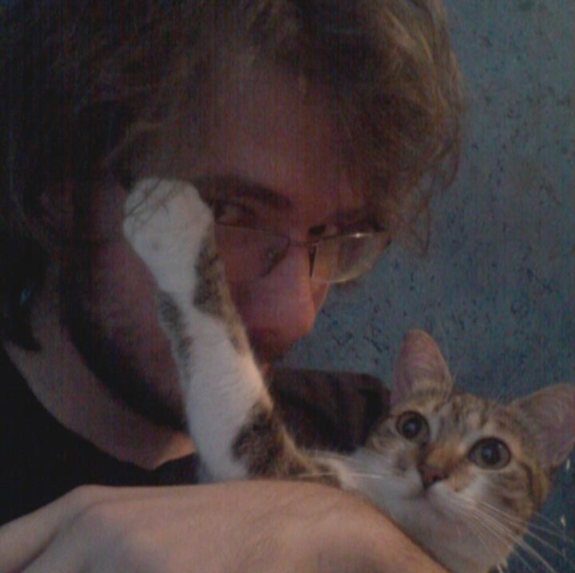

de Albernaz Ferreira,
@astroferreira

leonardo.ferreira@nottingham.ac.uk

I'm a PhD student in the School of Physics and Astronomy @ University of Nottingham, working under supervision of Prof. Christopher Conselice. Currently my research focus in using galaxy mock images produced from cosmological simulations (e.g. Illustris) to search merging morphologies in real data with Deep Learning.
After the end of my Master's studies I went to work in the industry as Lead Java Developer and DevOps specialist. I've designed and implemented CI/CD pipelines in several projects, most of them involving architechture in the cloud with AWS and Azure.
I finished my undegraduate (2015) and Master's studies (2017) at the Instituto de Matemática Estatística e Física of Universidade Federal do Rio Grande. I worked under supervision of Dr. Fabricio Ferrari with focus in Galaxy Morphology using non-parametric morphology and machine learning.
I'm also a member of the Grupo de Astrofísica Teórica e Computacional, a multidisciplinary research group that brings astrophysics, cosmology, statistics and computation together.
I'm a colaborator in the Astropy project.
You can check my Lattes (Brazilian academic CV plataform) here.